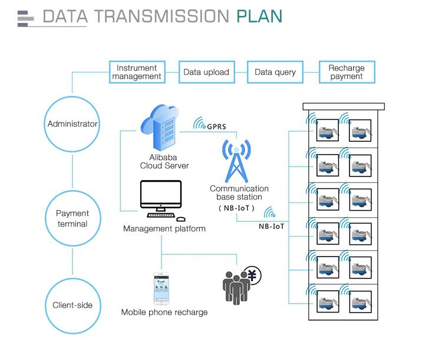

E-mail:
info@sh-meters.comCall Us:
+86 13131984716IoT water meters have the advantages of high safety, wide coverage, low power consumption, and large connections, so they are widely used. So what do we need to pay attention to in the daily use of IoT water meters?
In the daily management of water management companies, the IoT water meter actively uploads data once a day by default. Of course, this can be set. If the data is transmitted more than once a day, it will affect the battery life; the frequency of collection and upload can be based on management We need to adjust our collection frequency regularly, such as weekly and monthly data collection;
If the IoT water meter is immersed in water, it will greatly weaken the ability of wireless transmission. Therefore, in order to ensure the success rate of data collection, try not to immerse the meter in water for use.

I hope these can help you understand the IoT water meter. Please contact us for any questions. SH METERS has been working hard and looking forward to your joining.